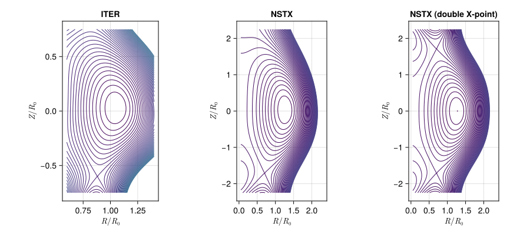
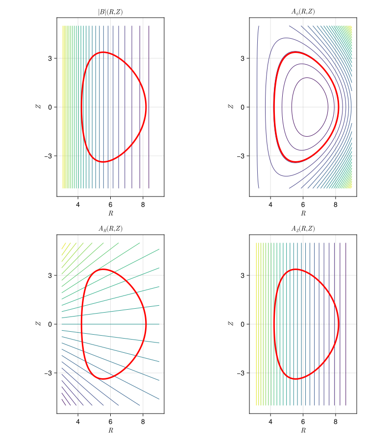

Solov'ev Equilibrium
The Solov'ev equilibria are exact solutions of the Grad-Shafranov equation, parametrised by the inverse aspect ratio $\epsilon$, the elongation $\kappa$ and the triangularity $\delta$ of the plasma boundary. Between them these three shape parameters cover configurations as different as a conventional tokamak, a spherical torus and a field reversed configuration.
The coordinates are $(R/R_0, Z/R_0, \phi)$, i.e. normalised to the major radius.
Up/Down Symmetric Equilibrium
ElectromagneticFields.Solovev.SolovevEquilibrium — Type
Axisymmetric Solov'ev equilibra in (R/R₀,Z/R₀,ϕ) coordinates. Based on Cerfon & Freidberg, Physics of Plasmas 17, 032502, 2010, and Freidberg, Ideal Magnetohydrodynamics, 2014.
The covariant components of the vector potential are given by
\[A (x, y, \phi) = \left( \frac{B_0 R_0}{2} \, \frac{y}{x} , \, - \frac{B_0 R_0}{2} \, \ln x , \, \psi(x,y) \right)^T ,\]
with $x = R/R_0$ and $y = Z/R_0$. The normalised poloidal flux $\psi$ is given by
\[\psi (x,y) = \psi_0 + \sum \limits_{i=1}^{7} c_i \psi_i (x,y) ,\]
with
\[\begin{aligned} \psi_{0} &= \frac{x^4}{8} + \alpha \left( \frac{1}{2} x^2 \, \ln x - \frac{x^4}{8} \right) , \\ \psi_{1} &= 1 , \\ \psi_{2} &= x^2 , \\ \psi_{3} &= y^2 - x^2 \, \ln x , \\ \psi_{4} &= x^4 - 4 x^2 y^2 , \\ \psi_{5} &= 2 y^4 9 y^2 x^2 + 3 x^4 \, \ln x - 12 x^2 y^2 \, \ln x , \\ \psi_{6} &= x^6 - 12 x^4 y^2 + 8 x^2 y^4 , \\ \psi_{7} &= 8 y^6 - 140 y^4 x^2 + 75 y^2 x^4 - 15 x^6 \, \ln x + 180 x^4 y^2 \, \ln x - 120 x^2 y^4 \, \ln x . \end{aligned}\]
This formula describes exact solutions of the Grad-Shafranov equation with up-down symmetry. The constants $c_i$ are determined from boundary constraints on $\psi$, that are derived from the following analytic model for a smooth, elongated "D" shaped cross section:
\[\begin{aligned} x &= 1 + \epsilon \, \cos (\tau + \delta_0 \, \sin \tau) , \\ y &= \epsilon \kappa \, \sin (\tau) , \end{aligned}\]
where $0 \leq \tau < 2 \pi$, $\epsilon = a / R_0$ is the inverse aspect ratio, $\kappa$ the elongation, and $\sin \delta_0 = \delta$ is the triangularity.
Defining three test points, namely
- the high point $(1 - \delta \epsilon, \kappa \epsilon)$,
- the inner equatorial point $(1 - \epsilon, 0)$,
- and the outer equatorial point $(1 + \epsilon, 0)$,
the following geometric constraints can be posed on the solution:
\[\begin{aligned} \psi (1 + \epsilon, 0) &= 0 , \\ \psi (1 - \epsilon, 0) &= 0 , \\ \psi (1 - \delta \epsilon, \kappa \epsilon) &= 0 , \\ \psi_{x} (1 - \delta \epsilon, \kappa \epsilon) &= 0 , \\ \psi_{yy} (1 + \epsilon, 0) &= - N_1 \psi_{x} (1 + \epsilon, 0) , \\ \psi_{yy} (1 - \epsilon, 0) &= - N_2 \psi_{x} (1 - \epsilon, 0) , \\ \psi_{xx} (1 - \delta \epsilon, \kappa \epsilon) &= - N_3 \psi_y (1 - \delta \epsilon, \kappa \epsilon) . \end{aligned}\]
The first three equations define the three test points, the fourth equations enforces the high point to be a maximum, and the last three equations define the curvature at the test points.
The coefficients $N_j$ can be found from the analytic model cross section as
\[\begin{aligned} N_1 &= \left[ \frac{d^2 x}{dy^2} \right]_{\tau = 0} = - \frac{(1 + \delta_0)^2}{\epsilon \kappa^2} , \\ N_2 &= \left[ \frac{d^2 x}{dy^2} \right]_{\tau = \pi} = \hphantom{-} \frac{(1 - \delta_0)^2}{\epsilon \kappa^2} , \\ N_3 &= \left[ \frac{d^2 x}{dy^2} \right]_{\tau = \pi/2} = - \frac{\kappa}{\epsilon \, \cos^2 \delta_0} . \end{aligned}\]
For a given value of the constant $a$ above conditions reduce to a set of seven linear inhomogeneous algebraic equations for the unknown $c_i$, which can easily be solved.
Parameters:
R₀: position of magnetic axisB₀: B-field at magnetic axisϵ: inverse aspect ratioκ: elongationδ: triangularityα: free constant, determined to match a given beta value
Constructing the Field
The parameters can be given explicitly,
using CairoMakie
using ElectromagneticFields
equ = Solovev.init(6.2, 5.3, 0.32, 1.7, 0.33, -0.155)SolovevEquilibrium Equilibrium with
R₀ = 6.2
B₀ = 5.3
ϵ = 0.32
κ = 1.7
δ = 0.33
α = -0.155or one of the named configurations can be used. ITER, NSTX and FRC are provided:
equ = Solovev.ITER()SolovevEquilibrium Equilibrium with
R₀ = 6.2
B₀ = 5.3
ϵ = 0.32
κ = 1.7
δ = 0.33
α = -0.155Plotting
The contours are the flux surfaces, and the plasma boundary is drawn on top in red:
plot_equilibrium(equ)
The three named configurations side by side. Note how much of the aspect ratio, elongation and triangularity is visible directly in the shape of the boundary:
fig = Figure(size = (900, 400))
plot_equilibrium!(fig[1,1], Solovev.ITER();
title = "ITER", xlims = (0.6, 1.4))
plot_equilibrium!(fig[1,2], Solovev.NSTX();
title = "NSTX", xlims = (0.05, 2.3), ylims = (-2.25, +2.25))
plot_equilibrium!(fig[1,3], Solovev.FRC();
title = "FRC", xlims = (0.0, 2.0), ylims = (-10.0, +10.0),
aspect = AxisAspect(0.5))
fig
Equilibrium with X-Point
ElectromagneticFields.Solovev.SolovevXpointEquilibrium — Type
Axisymmetric Solov'ev equilibra with X-point in (R/R₀,Z/R₀,phi) coordinates. Based on Cerfon & Freidberg, Physics of Plasmas 17, 032502, 2010, and Freidberg, Ideal Magnetohydrodynamics, 2014.
The covariant components of the vector potential are given by
\[A (x, y, \phi) = \left( \frac{B_0 R_0}{2} \, \frac{y}{x} , \, - \frac{B_0 R_0}{2} \, \ln x , \, \psi(x,y) \right)^T ,\]
with $x = R/R_0$ and $y = Z/R_0$. The normalised poloidal flux $\psi$ is given by
\[\psi (x,y) = \psi_0 + \sum \limits_{i=1}^{12} c_i \psi_i (x,y) ,\]
with
\[\begin{aligned} \psi_{0} &= \frac{x^4}{8} + \alpha \left( \frac{1}{2} x^2 \, \ln x - \frac{x^4}{8} \right) , \\ \psi_{1} &= 1 , \\ \psi_{2} &= x^2 , \\ \psi_{3} &= y^2 - x^2 \, \ln x , \\ \psi_{4} &= x^4 - 4 x^2 y^2 , \\ \psi_{5} &= 2 y^4 9 y^2 x^2 + 3 x^4 \, \ln x - 12 x^2 y^2 \, \ln x , \\ \psi_{6} &= x^6 - 12 x^4 y^2 + 8 x^2 y^4 , \\ \psi_{7} &= 8 y^6 - 140 y^4 x^2 + 75 y^2 x^4 - 15 x^6 \, \ln x + 180 x^4 y^2 \, \ln x - 120 x^2 y^4 \, \ln x , \\ \psi_{8} &= y , \\ \psi_{9} &= y x^2 , \\ \psi_{10} &= y^3 - 3 y x^2 \, \ln x , \\ \psi_{11} &= 3 y x^4 - 4 y^3 x^2 , \\ \psi_{12} &= 8 y^5 - 45 y x^4 - 80 y^3 x^2 \, \ln x + 60 y x^4 \, \ln x . \end{aligned}\]
This formula describes exact solutions of the Grad-Shafranov equation with up-down asymmetry. The constants $c_i$ are determined from boundary constraints on $\psi$, that are derived from the following analytic model for a smooth, elongated "D" shaped cross section:
\[\begin{aligned} x &= 1 + \epsilon \, \cos (\tau + \arcsin \delta \, \sin \tau) , \\ y &= \epsilon \kappa \, \sin (\tau) , \end{aligned}\]
where $0 \leq \tau < 2 \pi$, $\epsilon = a / R_0$ is the inverse aspect ratio, $\kappa$ the elongation, and $\sin \delta_0 = \delta$ is the triangularity.
Defining four test points, namely
- the high point $(1 - \delta \epsilon, \kappa \epsilon)$,
- the inner equatorial point $(1 - \epsilon, 0)$,
- and the outer equatorial point $(1 + \epsilon, 0)$,
- the position of the X-point $(x_{\mathrm{sep}}, y_{\mathrm{sep}})$,
the following geometric constraints can be posed on the solution:
\[\begin{aligned} \psi (1 + \epsilon, 0) &= 0 , \\ \psi (1 - \epsilon, 0) &= 0 , \\ \psi (1 - \delta \epsilon, \kappa \epsilon) &= 0 , \\ \psi (x_{\mathrm{sep}}, y_{\mathrm{sep}}) &= 0 , \\ \psi_{y} (1 + \epsilon, 0) &= 0 , \\ \psi_{y} (1 - \epsilon, 0) &= 0 , \\ \psi_{x} (1 - \delta \epsilon, \kappa \epsilon) &= 0 , \\ \psi_{x} (x_{\mathrm{sep}}, y_{\mathrm{sep}}) &= 0 , \\ \psi_{y} (x_{\mathrm{sep}}, y_{\mathrm{sep}}) &= 0 , \\ \psi_{yy} (1 + \epsilon, 0) &= - N_1 \psi_{x} (1 + \epsilon, 0) , \\ \psi_{yy} (1 - \epsilon, 0) &= - N_2 \psi_{x} (1 - \epsilon, 0) , \\ \psi_{xx} (1 - \delta \epsilon, \kappa \epsilon) &= - N_3 \psi_y (1 - \delta \epsilon, \kappa \epsilon) . \end{aligned}\]
The first four equations define the four test points, the fifth and sixth equations define the up-down symmetry, the seventh equations enforces the high point to be a maximum, the eighth and ninth eqaution set the $x$- and $y$-components of the magnetic field at the X-point to zero, and the last three equations define the curvature at the first three test points.
The coefficients $N_j$ can be found from the analytic model cross section as
\[\begin{aligned} N_1 &= \left[ \frac{d^2 x}{dy^2} \right]_{\tau = 0} = - \frac{(1 + \delta_0)^2}{\epsilon \kappa^2} , \\ N_2 &= \left[ \frac{d^2 x}{dy^2} \right]_{\tau = \pi} = \hphantom{-} \frac{(1 - \delta_0)^2}{\epsilon \kappa^2} , \\ N_3 &= \left[ \frac{d^2 x}{dy^2} \right]_{\tau = \pi/2} = - \frac{\kappa}{\epsilon \, \cos^2 \delta_0} . \end{aligned}\]
For a given value of the constant $a$ above conditions reduce to a set of seven linear inhomogeneous algebraic equations for the unknown $c_i$, which can easily be solved.
Parameters:
R₀: position of magnetic axisB₀: B-field at magnetic axisϵ: inverse aspect ratioκ: elongationδ: triangularityα: free constant, determined to match a given beta valuexsep: x position of the X pointysep: y position of the X point
Constructing the Field
Passing xpoint = true to any of the named configurations places an X-point below the plasma, turning the outermost closed flux surface into a separatrix:
equ_xpoint = Solovev.ITER(xpoint = true)Solovev Xpoint Equilibrium with
R₀ = 6.2
B₀ = 5.3
ϵ = 0.32
κ = 1.7
δ = 0.33
α = -0.155
xsep = 0.88
ysep = -0.6Solovev.NSTXdoubleX() gives a configuration with X-points above and below the plasma.
Plotting
fig = Figure(size = (900, 400))
plot_equilibrium!(fig[1,1], Solovev.ITER(xpoint = true);
title = "ITER", xlims = (0.6, 1.4))
plot_equilibrium!(fig[1,2], Solovev.NSTX(xpoint = true);
title = "NSTX", xlims = (0.05, 2.3), ylims = (-2.25, +2.25))
plot_equilibrium!(fig[1,3], Solovev.NSTXdoubleX();
title = "NSTX (double X-point)", xlims = (0.05, 2.3), ylims = (-2.25, +2.25))
fig
The X-point shows up as the saddle where the innermost open surface pinches off — for the double X-point configuration there is one at the top and one at the bottom.
Evaluating the Field
Solovev.@code_iter()Each named configuration has its own code macro (@code_iter, @code_nstx, @code_frc, and the _xpoint variants); for an equilibrium built from explicit parameters use Solovev.@code or load_equilibrium.
The coordinates are normalised to $R_0$, so a physical grid has to be divided by it before the generated functions are called:
nr, nz = 100, 120
Rgrid = LinRange(3.0, 9.0, nr)
Zgrid = LinRange(-5.0, +5.0, nz)
sample(f) = [f(0.0, Rgrid[i] / R₀, Zgrid[j] / R₀, 0.0)
for i in eachindex(Rgrid), j in eachindex(Zgrid)]
Bfield = sample(B)
A_R = sample(A₁)
A_Z = sample(A₂)
A_ϕ = sample(A₃)
extrema(Bfield)(0.5889650506872077, 1.7666835067380915)The plasma boundary is the flux surface parametrised by the shape parameters, which are available as constants in the generated code:
τ = LinRange(0, 2π, 200)
boundary_R = R₀ .* (1 .+ ϵ .* cos.(τ .+ asin(δ) .* sin.(τ)))
boundary_Z = R₀ .* ϵ .* κ .* sin.(τ)Putting the two together, the field strength and the three components of the vector potential with the boundary drawn on top. The toroidal field dominates by far, so the contours of $|B|$ are almost the lines of constant $R$, and it is $A_\phi$ that carries the flux surfaces:
fig = Figure(size = (800, 900))
panels = ((Bfield, L"|B| (R,Z)"), (A_ϕ, L"A_\phi (R,Z)"),
(A_R, L"A_R (R,Z)"), (A_Z, L"A_Z (R,Z)"))
for (n, (vals, title)) in enumerate(panels)
ax = Axis(fig[cld(n,2), mod1(n,2)];
xlabel = L"R", ylabel = L"Z", title = title, aspect = DataAspect())
contour!(ax, Rgrid, Zgrid, vals; levels = 25)
lines!(ax, boundary_R, boundary_Z; color = :red, linewidth = 3)
end
fig